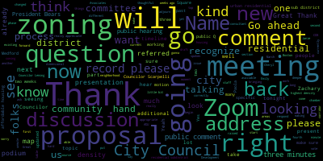
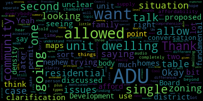
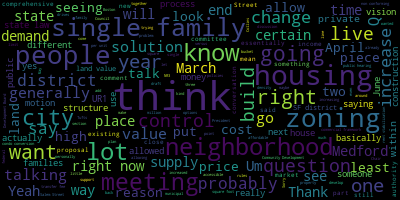
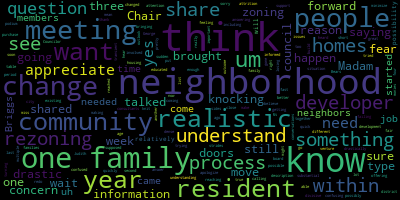

[Cheryl Rodriguez]: Test one, two, test one, two.
[Collins]: All right, why don't we get started? There will be a meeting with the Medford City Council Planning and Permitting Committee, February 26th, 2025. This meeting will take place at 6 p.m. in the City Council Chamber, second floor, Medford City Hall, 85 George P. Hassett Drive, Medford MA, and via Zoom. Mr. Clerk, please call the roll.
[Adam Hurtubise]: President Bears, I know he's running a little late.
[Collins]: Yes, he'll be here shortly.
[Adam Hurtubise]: Councilor Callahan.
[Collins]: Oh, she is on Zoom.
[Adam Hurtubise]: She's under Anna C. Councilor Leming.
[Collins]: Councilor Leming, that was to you. I can't hear.
[Leming]: I can't hear. But yes.
[Collins]: Beginning to speak into the mic for the folks on Zoom. Councilor Scarpelli.
[Adam Hurtubise]: Present. Vice President Collins.
[Collins]: Present. Four present, one running late. The meeting is called to order. Thank you all for joining tonight in person and on Zoom. The action and discussion item for this committee meeting is 24-033, Zoning Ordinance Updates with the Innes Associates team. This is our fourth meeting of this committee of the year, and it's also our fourth meeting on the neighborhood and urban residential topic. So I know that Innes Associates will be walking through kind of the progression of this topic that we've seen over the past couple months in their presentation just shortly. But in a nutshell, this is the part of our citywide... Sorry, I'm going to turn my volume up. Now that I hear the fans coming on, this is the has my volume better. Okay, thank you. This is the part of the city wide review of our community zoning in which we are looking at zoning and specifically residential districts. We're looking at everything from the lowest density districts in the city up to the highest density districts where we currently see the highest density for residential uses and also those areas where it makes sense to prioritize denser residential housing because of new T stations in the community. The goal of the neighborhood and urban residential zoning proposal is to look at the areas of the city that are already residential and craft a updated and thoughtful proposal that responds to what is already there, what the geography and topography and characteristics dictate for what can go into each section of the city, and to create a more thoughtful gradient of housing options from the lowest density residential up to the highest density residential. So we have been workshopping and iterating on this for the past, the three prior committee meetings. And I know that Paola in just a minute is going to run us through kind of how this proposal has evolved over those past three meetings. What is new tonight, in my understanding, which we talked about last or two weeks ago, is that now that we have revised the district map, that bird's eye view of what residential subdistrict could go where throughout the city, we're now going to take a closer look at dimensional standards. And we are also going to look at different options for how to protect non-conforming structures in the potential updated residential subdistricts. And then we're also going to talk a little bit about what comes after this phase of the project. So with that, I will check and see if there are any Councilors who have initial questions or comments up top. And then I will hand it over to Ines Associates for a presentation and we can take things from there. And as usual, we will take all public comment at the end of the meeting. So bear with us. All right, seeing none, happy to pass it over to Emily or Paola to walk us through our presentation.
[Paula Ramos Martinez]: Hello. Oh, well. Good afternoon. I'm Paula Ramos-Martinez. I'm the senior planner at Innes Associates. With me today, we also have Emily Innes, director of Innes Associates, and Jimmy Rocha, and he's our spatial analyst. So I'm going to start sharing the presentation.
[Unidentified]: Okay.
[Paula Ramos Martinez]: So today, there are some things that I'm going to try to go a little bit faster than the other times, because we have seen it several times. In any case, if somebody has any question, we can totally go back and explain a little bit more. So we will go through the timeline. What is the 2025 schedule? When we have that opportunities for more public comments. Some introduction and analysis that we have done towards these presentation and to analyze the residential districts. What which have been all the proposals that we have done and all the different iterations. and then the final updated proposal, and we will look at the first zoning draft. And of course, at the end, we are very available for your Q and A. So today we are looking at the neighborhood and urban residential. We have done already, this is the fourth meeting talking about this topic. So These are the sorry, let's start a little bit. So these are all the permitting a plan permitting in committee meetings. that we have and all the different topics that we will talk about from January to May. Then we also have the CDB, the Community Development Boards, and when we will have those. And then we have also the public Q&A moments that we are looking to have. So we had in February 10th, Salem Street. We are looking to also have another public meeting on March. the dates that we are looking for, and these are optionals is March 20th and the March 27th. And then we will have another public Q and a in April to talk about the squares, and this will be in April, the 10th or the 29th. So these are some still we need to, uh, between the city us and city council when these dates would be, um better for all of us, but this we just wanted to show that we are looking into into setting some dates already for people to know with enough time in advance. And then this we already have spoken about, so our 2025 schedule. There is only one thing that we are changing, and it's very specific. It's in the topics that are citywide, and it's our neighborhood notes. We have moved them to April. When we talk more about the commercial districts, the mixed districts, we will also talk about this because it's the smallest scale of that commercial. So we will bring back those neighborhood notes in April. For the rest is very similar to what we had. So here we have all those opportunities for public comments. We have said that City Council is an opportunity for people to give their opinion. We also have the Community Development Board, and then we also have again, the Community Development Board will vote on a topic and refer it back to City Council. And when it's back to City Council, it's another opportunity to hear the residents. opinions. So right now we are in City Council. We're still talking about the neighborhood, the residential districts. And once we have more updated the next public meetings, we will also place them in here. So we have already talked, and the president, colleagues, you have talked about what are we doing here. We are updating the zoning according to what came from the comprehensive plan that was released in January 2023. These are some of the different goals and objectives that the plan had. and we are looking at all of these. These are referring to housing, and so we are looking at all of this to bring into your zoning. This is the vision map, and so we are looking at all the corridors, the squares, transformational areas, nodes, and all the residential districts from low to higher density. So from here, we are building on top of the zoning built on the comprehensive plan and from this idea. So a lot of the different maps that we use to build up our residential districts, I'm just going to go through them very quick, but your current zoning will be something that we look at. Your transit system, all the non-residential districts. And what are those? So all the corridors, squares, institutional and special districts that we have and how they relate to the residential, all the different building types, residential building types of single family, two family and where are those as well as dimensions. and a lot of others, but some, those are, let's say, the most important for what we are doing now. So in here is just what are we considering. So is that proximity to highly frequent and efficient public transit, proximity to higher job density areas, which is the map that we have here on the right, the lot sizes and the topography, existing residential types, and then the transitions between those low and medium density areas. So we have a lot of proposals. We have, this is the version one, then we amended, we had a new proposal. This was the amended proposal number three with the neighborhood and the urban, and this is the final draft. So we changed the colors. It's not that it's something different. We just heard that it was a bit confusing. We were using the yellow color palette because that's the residential color that is used for residential use. But in this way, we understand that it's more identifiable. So we have the only changes that were done was to extend urban residential one to the south of Ball Square, the T station, and to the west of that site for the rest was pretty much keeping the same. And this is what we try to do always, which is where are these new districts and how they overlay in the building types that you have and currently are existing. These I'm not going to talk about. So I'm thinking if we stop here or if I just continue with the presentation.
[Collins]: Yeah. Paola, thank you for that, for the introduction to how the proposal maps have changed over the past three meetings. And just to highlight two things that I don't want to get lost in the discussion, or things that I want to clarify, you're saying that the only change for the Proposal 4 map from Proposal 3, which we looked at two weeks ago, is that the UR1, Urban Residential 1 subdistrict, now extends closer to Ball Square. And the colors have changed. That was in response to feedback that the different shades of yellow were just really hard to parse, hard for people to tell what was different. So if people are seeing a new teal or green on the map, that's not a new sub-district. It's just a new, more contrasting color for the same sub-district as we were looking at before. Did I capture the part about Ball Square sub-district correctly? Yes, that's perfect. Great. Thank you. And I also just want to I forgot to say this up top. Um, but it's my understanding that this also has not changed from the original version of the proposal that when we're talking about these residential sub districts, the maximum by right height for all residential sub districts is three stories.
[Paula Ramos Martinez]: Yeah, that's correct. Great. We will go through the draft, but yes, thank you. Um, so we got some concerns about the typologies that we had and just we wanted to just make sure that everybody understands when we have those residential typologies. What are those? What are we talking about? And why we use the detach attach, um, definitions. So very quickly. I'm just I just wanted to explain that. So when we talk about detached is that the building is not touching any of the lot lines. That's basically what detached means. So the building, the principal building, it's going to be on the lot, and there are going to be setbacks that are going to be bigger than zero. When we have one of that lot lines, the building is touching one of those lot lines and is connected to the building that is on the other lot. This is what we call semi-detached. They share a wall, but each building and each principal building is standing on one different lot. And attach is when they share both walls. And this is as well. One principal building, one lot. They are not all in the same lot because we have, and maybe I explain it better like this. So one unit dwelling detached. It means that you have one, in one lot, you're going to have one unit. And it doesn't matter how that is, the shape of the building, it's one lot, one unit, and you have setbacks that are bigger than zero. If we go to two-unit dwelling detached, it means that in one lot, you have two units. And that building can be attached one next to the other. One unit is above the other. One unit is fronting the street, and the other is in the rear. It doesn't matter. It's one lot, two units. And then the principal building can be as divided as they want. three-unit dwelling detached, this is the same, but instead of two units, it's a three. We don't mind how these three units are divided. It's in the same principal building, and it's one lot, three units. So it can be the type of triple-decker, or it can be just a big house that has been divided into three units. Multiplex, in this case, we talk about building units of the principal building contains four to six units. And here again, we have one lot and then four to six units depend on the principal building. So when we say one unit dwelling attached, and we call it also row house, this is the typology, the building type where we have one unit per lot. and they are attached to the next one. But as you can see, in every lot, we will have one unit. So we are still talking about one unit dwelling. Here, we don't have two. It's not three. It's not all on the same lot. It's each of these are divided, and each one of these has its own lot. They will have their private garden, their backyard. They don't share. They have each one of them their own. So their side-to-side back for the one in the middle would be zero for both. When we have a townhouse is when this is a multifamily building. This is one lot, and they just represent the statics of a row house, but they are all in one lot. So we are talking about, for example, if we have three together, it would be one lot, but we have three units. And that is basically the difference in zoning for attach and detach. Sorry if this is a little bit too dry, but hopefully that helps with the examples. So now I want to go to the draft. And so going very quickly, just if you have questions again, let me know. We're going to amend section 94.2.1, Division into District, amend section 94.3.2, Table of Use Regulations, Table A, Dimensional Standards, 94-4.1, Table of Dimensional Requirements, Table B, and then amend the 94.12.0, Definitions. So the neighborhood, the new division into district, we will have Neighborhood Residential 1, the classification is residential, NR1, Neighborhood Residential 2, abbreviation NR2, Neighborhood Residential 3, NR3, Urban Residential 1, UR1, and Urban Residential 2, UR2. Um. On the uses. I'm just going to talk about the detached one unit dwelling. This is your typical single family, um, will be allowed in and are 123 and not allowed in. You are one and two. Attached one unit dwelling. It will be Sorry, NR3, UR1, and UR2. Detached to unit dwelling. This is your typical duplex that is in one lot. It's going to not be allowed in NR1, but it is allowed in NR2. and then in three, you are one and you are two. Multiplex are not allowed in NR1, 2, and 3, and they are allowed in UR1 and UR2. Multiple dwelling when they are bigger than six, they are not going to be allowed in NR1, 2, 3, and you are one. They're only allowed in. You are too. So I just wanted to go through those typologies. Um and so we had the table of uses. Let us know if there is any use that you would like to talk about.
[Collins]: Thank you. I'm going to recognize
[Leming]: Got a bit of a cold, which is why I'm not there in person. And I hope that the audio in the chambers doesn't make me completely beyond comprehension. I understand it. Cool. So looking through these use tables and the proposed maps, What ADUs were allowed in accessory dwelling units was a little bit unclear to me. Are ADUs going to be discussed later? on and is there sort of like differences in where ADUs are allowed for each one of these different types of residential uses? Sort of, and is that kind of like its own separate table? Sorry, I was just like looking through, I was trying to get some clarity on the ADUs situation and I wasn't really finding it.
[Collins]: Go ahead, Paola.
[Paula Ramos Martinez]: Thank you, if I may. Yes, so we are talking about that. This week, we were going through, and I have them here, the final state law, the published law, and then the the section 94-8.2 accessory dwelling units that Medfair has in their zoning. We want to first update the ADU zoning, which we were expecting to have it quite soon, I hope next week. So in the next meeting, we can talk about it and we can bring it. And there are not a lot of changes, but there are some that needs to be updated to be within your law. And what we want to do after that is to bring into the accessory uses the ADU use. And so you will have it in the table and you can see very clearly if it is allowed or not, depending on which district. So at this moment, the law states that only in single family districts. And this is any district that has that use allowed. So it doesn't have to be exclusive single family, but it can be any residential district that allows single family. It's where you have to give that right of the ADUs. So that is a protected use. If there is no single family in that district, you don't have to do it. So if we follow that idea, it will mean that in our in our proposal in the residential districts, you would have NR1, NR2, and NR3, as all of the three contain the detached one-unit dwelling as a yes. Then all those three by right could have the ADU. Now, you are one and you are two, by state law, they don't have to. by right have the ADUs. That is up to us to decide for everyone here to decide if that's something we want to also include them. And that would be okay. That is not going against the law. You can have in all of them be able to have an ADU. Okay.
[Leming]: Okay. Thank you. Thank you very much for the for the clarification. Um. I was I was seeing 80 you mentioned on some of the proposed residential zoning maps, like single unit dwelling plus 80 you under. 1, 2, 1, 2, and 3. And it was unclear to me if ADUs, from looking at that, if ADUs were allowed on two or three unit dwellings. But it sounds like those are still all on the table and will be discussed next week. So if that's going to be a topic of later discussion, I'm happy to just move on.
[Paula Ramos Martinez]: Yeah, so in NR1, 2, and 3, we need to follow the state law. So in those, you have to permit the ADUs.
[Leming]: So in NR1, is it only single-unit dwellings that can have ADUs? Or is a two-unit dwelling allowed to have an additional ADU as well?
[Paula Ramos Martinez]: So in any district that has single family, you can have an ADU. We will need to, we need some legal advice, but what we think is that any principal building can have an ADU. And that means that a two unit and a three unit could have one ADU by right. And the second would be by special permit.
[Leming]: Okay, all right, that clarifies it. Thank you, thank you very much.
[Collins]: Thank you, and I see Attorney Silverstein, who's working on this project on Zoom, I'll recognize you as well.
[Silverstein]: Thank you very much. Just to answer that question, the way that the regulations have been promulgated by the executive office of housing and local communities is that an ADU can be allowed or is allowed by right in any single family district. And a single family district is any zoning district in which a single family home is an allowed use either by right or by special permit. So if you're in a district that allows single family residences by right or by special permit, you have to allow an ADU. And then the ADU is accessory to a principal dwelling. And a principal dwelling is a structure that has at least one dwelling unit. So the way that the state has promulgated the regulations is that If you have an ADU on the same premises as a residential building that has one or more dwelling units in a single family residential zoning district, then the ADU is allowed by right.
[Collins]: Great. Thank you for that guidance, Attorney Silverstein. You're welcome. Councilor Leming, do you have more on that topic? Does that satisfy your question?
[Leming]: Yeah, it does. So yeah, from what they're explaining, if If a single unit dwelling is allowed in a given district, then any principal unit in that district also has to be able to have an ADU by right. I think that's what you're saying. But if it's in like an urban residential, which doesn't allow single family homes, then you're not necessarily required to allow ADUs. whether or not you get a second ADU would be up to the Community Development Board in any case. Is that an accurate summary?
[Silverstein]: Yes. That is the rule as set forth in the HLC regulations.
[Leming]: And is it, just for one further clarification, If you're allowed one ADU, like if the zoning says you're allowed one ADU, is there any place in the zoning where you can say, no, you're not allowed a second ADU, even with a special permit? Or if you allow one ADU, do you have to allow for the possibility of a second ADU?
[Silverstein]: So the statute says that for more than one ADU in a single family residential zoning district, quote, there shall be a special permit. The HLC regulations actually suggest that a community does not have to allow more than one by special permit, and the regulations say that if a community chooses to allow more than one, then that is by special permit. I will be honest. don't necessarily agree with that interpretation. I don't know how the HLC regulations that suggest this is optional can be melded with the language in the statute that says there shall be a special permit for more than one. But you know, obviously that this is one among several ambiguities in the statute that are going to have to be decided by courts at some point. Sorry.
[Leming]: Is the permit granting body always the Community Development Board or can it be some other body within the city?
[Silverstein]: No, no, the statute doesn't say who the special permit granting authority is. It could be CBA, it could be planning board or in Medford, the Community Development Board, it can be the council, but it just says there shall be a special permit.
[Leming]: Okay, could that be like the staff level?
[Silverstein]: Likely not because of the definition of special permit grading. It's already in the Zoning Act, which is pretty much limited to the council, ZBA or planning board. Thank you. Thank you.
[Leming]: Apologies for the extended questioning.
[Collins]: I understand we are going to get deeper into the ADU's discussion in two weeks, as Paula mentioned. So I think that's very helpful. And thank you for the legal guidance, Attorney Silverstein. I think for the purposes of this proposal, we could probably put a pin in that discussion for now, but really appreciate the clarity on how it relates to the districts in this proposal where single family homes are allowed by rightness. I don't see any by special permit in this table currently. Thank you.
[Paula Ramos Martinez]: Yeah, thank you. So now in the section 94-4.1, we have the table of dimensional requirements, they will be by incorporating the following table. Here we have all the dimensional standards. So the lot area minimum, the frontage minimum, facade build out, residential density. And here we have minimum, maximum that we wanted to have, and then a subsection, it will be the historical conversion that works a little bit different. So the residential density in NR1 is one unit, NR2 goes from one to two units, NR3, one to three. You are one from two to six. And you are to it goes from two, and there is not a maximum there is no cap on the, on the maximum historical conversion we have. And we are here having only the maximums for NR1. We are doing an increase in one unit. So in NR1 will be two units, NR2, three units, NR3, four units. And for the urban residential, we don't have a unit density limit. That will be depending on the square footage of those houses. And so what we do require is that the minimum area per unit is at least 900 square feet. So those will be the regulations for the density. Now ADUs in here, and I will just say that very quickly, by the state law We have it here. It says protected use ADUs shall not be counted in any density calculations. So if there is an ADU, so that is another unit, it doesn't count here for the residential density. That will be in the table of use. And if it's allowed, then it's allowed. And it doesn't have to do with the maximum densities that we have here. It would be apart from this. Maximum heights we have for NR1 2.5, NR2 2.5, and then the rest of them is always three stories. Setbacks, we have some changes, NR1, NR2 have the front 15 feet, side seven and a half, and then the rear will be 15. In NR3 is 10 front, 5 on the side, and rear 15. Your 1 is 10 front, again 5 side, but the rear is 10, and your 2 same. 10 on the front side, 5 rear, 10. Then we have the building coverage. Green score will only apply in UR2 because of the, is where we have the multifamily, more than six units. And so that's where it will only apply. For the rest, applies the pervious surface minimum and an open space landscape. The open space landscape, it is already a pervious surface, I have the definitions. So, these 20% of open space landscape it's, it doesn't add to the pervious surface is within the pervious surface. And so we add the definitions of historic conversion, multiplex, then pervious surface, a surface that allow water to infiltrate the soil beneath it, also known as permeable surface, and open space landscape, open space design and planted for pleasing appearance with trees, shrubs, ground covering grass. Such a space may not include lot area used for parking, loading, access drives, other areas with hard surface. or usable open space. So those areas just to make sure that the pervious surface will have a minimum that will be a green area. And that is for now the final, yeah, the end of the draft. We are looking into, for the UR2, we need the... Sorry, the standards, development standards for multifamily. And that is something we will bring also on the next in two weeks.
[Collins]: Great, thank you so much for that overview. It's exciting to see the two months of discussions distilled into a couple of organized tables. Thank you for that clarity. I know we have another section to the presentation that we're talking about tonight. Before we move on to that, are there any further questions from councillors? on the dimensional requirements or any of the new, we'd say new definitions. These are topics that we were talking about throughout this process and are also present. You know, have been present for a long time, but any questions on the definitions and dimensionals presented tonight? I'll recognize President Bears.
[Bears]: Thank you. And sorry if this isn't the next section, but if you guys talk a little bit about the protection for single families in the UR1 and UR2 districts.
[Collins]: Perfectly teed up the next section of the presentation.
[Emily Innes]: Yes, thank you very much again for the record Emily and us and then as associates. We heard it the last time that there were people who were concerned about having single family, not be allowed as a right in the urban districts. And so what we wanted to do was go back and see what the protections in your existing bylaw were for non conforming uses and then see if there was anything else that we needed to add to that so I did check your existing ordinance. Um, it actually it had almost everything that I was looking for. I do want to have a conversation with Attorney Silverstein, just to make sure that you know from a legal perspective I am reading the non conforming regulations the way that they are intended to be read. But I think what we are looking to see what we are looking to make sure is that somebody who has a non conforming use like a single family home in this district if this passes is still able to invest in it is still able to do improvements such as you know a porch or a deck or an addition. without having to be overly burdened by a permitting process. And essentially what your regulations state now is that if you are not increasing the existing non-conformity, so for example, say your single family home is non-conforming because of the dimensional regulation and you're not increasing that, then you would not have to go through the variance process. Um, uh, and there are some exceptions. For example, if the lot size, which has nothing to do with the building, uh, is an issue, um, then there's an exception already built in your zoning for that. I want to check with, uh, Attorney Silverstein if we also need to make a specific exception for a single-family house in a, um, uh, an area where it's not allowed as a right. But in fact, under state law, there are existing protections for single-family and two-family houses. Just going to have a conversation with him but I think I can confirm that your ordinance is already on the right track track and if we need to make any additional tweaks we can suggest those, but I based on that I was not initially concerned that the people who have existing single family homes in these districts would be unduly burdened by this change.
[Collins]: Great, thank you so much for looking at the current ordinance to see if the protections that we'd want to make sure are present under the new zoning, if those still apply to the current zoning. It's great to hear that. It sounds like we won't have to make many, if any, further tweaks to make sure that if, should the noose of districts be approved, and this goes into effect, that people who live in existing single family homes in districts where maybe single family homes, new ones will not be allowed by right, will not suffer, you know, a burdensome and onerous and inconvenient permitting process when they want to make the kind of improvements to their homes that anybody should be able to do. Great to hear. Thank you. Any additional questions on that point, President Bears or other councilors? All right. Seeing none. Thank you. So we have before us the updated draft zoning proposal for the neighborhood and urban residential. We ran through the zoning map that the text describes, the updated zoning map, the dimensional requirements, had a discussion about how that affects ADUs, and we know that at our next meeting in two weeks, we're gonna dive in a little bit deeper on the ADU issue, kind of a citywide approach, not specific to this proposal. And we'll also hear a little bit more about development standards for multifamily buildings in that one highest density residential subdistrict, UR2. So we have that to look forward to. And I believe that next phase of our process will also dovetail with us starting to get a little bit deeper into a kind of shifting out of residential sub districts for the moment, talking more about a commercial framework. which will guide our discussions later in the spring about the more commercial areas of the city, some additional corridors, squares. I know a lot of people are eager for us to talk about Medford Square. We're working hard to make sure that that conversation dovetails with the other work, RFP, other consultant work that's been in the works around Medford Square. So we have a lot coming up on the pipeline as folks, so on the timeline earlier in the process. I'll recognize President Bears.
[Bears]: Thank you, Chair Collins. And I think just to add to that point, specifically, we're going to be talking commercial framework, Medford Square, West Medford Square, Wellington, Glenwood, and we're especially going to be talking about the Tufts Institutional District and Boston Ave and Main Street. And those are, I think I did those out of order, but those are the four remaining topics.
[Unidentified]: That's correct.
[Collins]: I will run through that timeline one more time before we adjourn tonight. But before we kind of give that overview and move to public comment, I wanted to ask if there are any motions on the proposal before us, any additional questions or comments from councilors. As we all know, but just to reiterate it, this is kind of the long first or second step in the zoning amendment process, depending on how you want to look at it. This is our fourth meeting on this proposal. After a new zoning or zoning amendment is referred out of this committee, it is then referred by the City Council to the Community Development Board for public hearings, one or more, where there may be more public comment. We are working with the zoning consultant and city staff to make sure that we host another public Q&A session for this proposal before the CBP public hearing or hearings on it. like we did for the Salem Street corridor. After review by the CDB and it puts forward its recommendations, it will then come back to the city council for another public meeting where we will take a vote on it. And that's again, just to like to say it at least once every meeting is the process that all zoning has to go through. I know there's a lot of moving parts, but we really do hope that everybody participates in as many pieces of that process as they can and want to.
[Bears]: just to clarify for me as well. The next meeting of this committee, we're going to be talking about the commercial framework. We're doing the commercial framework. We're going to kick off the commercial framework at the next meeting. All right. Yes, that's right. So we should be moving together. Great. Okay. I'll make that motion and then we should hear from everybody.
[Collins]: I'm sorry, I didn't catch that.
[Bears]: I'll make a motion to refer this to the regular meeting. Um, but we should certainly do public participation before we take any votes.
[Collins]: Absolutely.
[Bears]: And one, one other question. Sorry. Um, you guys are going to look at the comments from the building commissioner.
[Collins]: Great. Seeing no further comments or questions from councilors, we'll go now to public participation on this proposal. I will alternate between the podium and Zoom. Everybody will have three minutes to state comments or ask questions. If there are questions, you can then bundle them and have the zoning consultants or city staff or councilors respond to them at the end of all public comment as appropriate. All right, I'll start on Zoom. Name and address for the record, please, and you have three minutes.
[Zachary Chertok]: I'm Zachary Chartalk, 5 Allmont Street. I just wanted to clarify the documents and the updated maps. Will those be, including the proposal maps, will those be made publicly available and accessible online and in person shortly to reflect any updates and changes? There's been inconsistency with that in the past.
[Collins]: Thank you. They're available on Civiclerk right now. I'll put the link in the chat. All right. You have the floor if you have any other questions for us tonight, Zachary.
[Zachary Chertok]: That's all for now.
[Collins]: Great. Thank you. All right. Oh, thanks for moving that, Paolo. All right, Gaston, please go ahead. Name and address for the record, please.
[Gaston Fiore]: Thank you, Madam Chair. Gaston Fierro, 61 Stingley Road. I just got two questions. The first one is on page four, under section C, open recreational and agricultural uses, item three, exempt agriculture. What does that mean?
[Collins]: I'm sorry. Yeah, we do.
[Emily Innes]: We don't have to pass the mic. I can stand up. Under Mass General Laws 40A, Section 3, commercial agriculture is exempt from zoning restrictions or most zoning restrictions. If you actually look at that section, there are a number of exempt uses under that. And those are usually put in the table of uses as exempt uses. So it's called out. Some communities also allow what would be called non-exempt agriculture. So we usually make a differentiation. But that's when you refer to exempt agriculture, that's what it means. It's the section three. Yeah, exactly. Non-exempt agriculture just means that it's an agricultural use that doesn't meet the requirements to be exempt agriculture. So there's dimensional requirements. There's an acreage requirement. There's also a requirement for the number, the amount that you grow or sell in a year. So it's the first very long paragraph of that section. Okay, yeah.
[Gaston Fiore]: And the second question was related to the surface is, is there going to be a minimum permeability rating or something that would qualify as a perfect surface or a one go about that.
[Paula Ramos Martinez]: Thank you, that's a great question. So that will appear on our standards. So next week, next meeting, we will bring that. So this is only the definition, but we will attach to this also the standards of what is actually permeable surface and how that is rated.
[Gaston Fiore]: actually, the last one is so on open space landscape when it says such space may not include it means that it does not include parking etc. Okay, perfect. Thank you very much.
[Collins]: Thank you for your questions. Right, we'll go back to Zachary. I think that's a new hand and not an old hand.
[Zachary Chertok]: I have Zach Zachary char talk five almost straight I'm trying to do different hand raises for questions so I don't hog the mic here. But going back to when the original meeting schedule was gone through, I just want a clarification because I couldn't quite find it. It looks like in that original schedule outline that any upcoming public Q&A that's scheduled for Salem Street and a couple of others are going to extend after the city council vote on March 11th. Are those intended for participatory for review or just purely for public disclosure on what's already been decided?
[Collins]: Thank you. Yeah, we had the public q&a. Well, just to state up top the we've been updating the timelines as we've been going along. So if you're referring to a timeline from a past meeting packet, it's probably not.
[Zachary Chertok]: No, I'm actually talking about the one that Paula went through at the beginning of the presentation tonight.
[Collins]: Got it. Great. Our intent with the public Q and A's is for that to kind of be slotted in between the city council committee creation of the proposal before the CDB holds public hearings on it to create an additional chance for public comment before it's referred out of the CDB and back to the city council for a vote. So an opportunity for comment for Q and A is before the zoning proposal is referred back to the city council for a vote to ordain.
[Zachary Chertok]: So just to simplify that, that's intended to invoke the CD board for continued public participation. So basically if there's any meetings regarding something that extends past the vote that's planned for March 11th on the current agenda, that that would make the March 11th meeting non-binding because there are extra sessions that go beyond it.
[Collins]: It's the public Q&A is not, it is not a function of the CD board. I'm gonna go to President Bears to respond to this.
[Bears]: There is no further proposed public Q&A on the Salem Street. The Salem Street public Q&A was dated as February 10th, because that's when we had it at the Roberts School. I think what Vice President Collins is describing is that essentially these planning and permitting committee meetings are to develop a draft That draft is then referred to the Community Development Board, which is when the official public hearing process required by state law for zoning occurs. And you have a public hearing in the Community Development Board and then a public hearing of the council. We are creating this public Q&A meeting in addition to, it's outside of the legal process, but it occurs between the referral of this to the initial referral of a proposal drafted by the Planning and Permitting Committee to the Community Development Board and the first hearing of the Community Development Board. So we've already had the Q&A for Salem Street. There's no further Q&As planned. The next Q&As are planned for a March Q&A regarding the residential proposals we're discussing tonight, and an April Q&A for at least some of the commercial proposals we intend to start discussing next meeting.
[Zachary Chertok]: Thank you.
[Collins]: I recognize Director Hunt at the microphone as well, then we'll go back to you, Zachary.
[Alicia Hunt]: Madam Chair, I just want to be clear, just because there's a date throwing around that there isn't actually a meeting scheduled for. So the CD board has continued their hearing on the Salem Street proposal to March 5, that is a public hearing. And so there will be public comment can be taken during that meeting. It is anticipated that the city board is likely to close their hearing on March 5th and refer that back to the City Council and give their recommendations to the City Council. And I don't know actually when the City Council continued their Salem Street 2. Perhaps that's the March 11th. That was the March 11th date. Okay, so if the city board meeting, the board closes on March 5th, which is, I anticipate they will, although they're a public board and I don't tell them what to do. I'm just sort of thinking about how what they know and what they don't know. If they close, then they'll refer it to the city council for their hearing on March 11. If they don't, it could go longer. The public meetings, Q&As that are scheduled are on different topics. So just to be very clear about that.
[Zachary Chertok]: No, that was why I asked, because it wasn't clear from the glance over, and I couldn't find it in the documentation. So thank you.
[Collins]: Great. Thank you for the clarifying question. I see no further hands raised on Zoom. Please go ahead. And then we'll go back to Zoom. Just your name and address for the record, please.
[Judith Weinstock]: My name is Judith Weinstock at 144 Burgett Avenue. I actually wrote a letter to the voting members of the committee, and I know several of my neighbors did as well. I have sort of a list of questions. Some of them are procedural, sort of like, okay, so in my neighborhood, I live proximal in what you would now call, if it goes through, a UR1. at Anberg et al. I would say roughly 50% of the homes that are designated under the UR1 around my area are all single family homes and the remainder are mostly two family homes. So for pondering and not necessarily for answering tonight, I am curious what your vision is for my current community 10 and 20 and 30 years from now, because eventually homes do have a useful life. Single family homes do need to be replaced in order to move in perpetuity, right? And so if that will not be allowed in UR1 communities, what do you envision will happen? Is the plan to actually begin to migrate those communities into these much higher density areas? That's one question, and some of it is predicated on what will be allowed, if I'm reading your table correctly, I live on a 4,000-square-foot lot. I have a very small 1,300-square-foot home. And so it's nonconforming. Are you saying that someone could buy my house, knock it down, and put up a multiplex on that space, a six-unit building? So I'm trying to understand from your chart what the dimensional square footage for a lot has to be in order for different size things to be there, different types of structures. So I think that I really would ask folks to think about what are you really envisioning is going to happen in my community where currently it's very family friendly, families want to live in single family homes. And ultimately, as they age out, my house is over 100 years old, as they age out, there would not be single family homes under this proposal in that community, which would really change. And maybe that's the goal. Maybe that's what you're attempting to do over decades of time. So separate issue. So I can't answer that because I only know the people in my community and I think that we all feel that in NR3 or whatever, the residential that allows single family homes along with all those other things except the multiplex, given that we almost all have non-conforming lots of 4,000 square feet or less, can't even imagine having the density that you're speaking about and still have it be a community that actually knows each other. So I would just say, please give that incredible pause because it has been an enclave of family friendly homes for over 50 or 60, 70, 80 years. And if you're really, I don't know if I want to live there, frankly. But I will say that a developer, if all these other things are allowed, developers are going to make a killing, and so will those single-family homeowners, because their properties will be in hot demand for somebody to turn it over into two or three units. And I can't tell from your proposal, another just very basic question I had is, are condos considered multifamily homes or not? And are they allowed under these proposals, or are they not? So lots of specific, which I would be happy to send through, because I don't want to take up more than my time. But I would ask, what's the vision for this particular community that we are not there? I know there are two. I'm not Ball Square. I'm the other one, Tufts Medford. I just can't imagine what the vision really is given that over 50% of the homes are single family on non-conforming lots right now.
[Collins]: Thank you for your questions.
[Bears]: We'll go to president bears first. I mean, I think that gets to the crux of the, of the whole zoning project really. Um, and I think the vision based on the comprehensive plan is that every neighborhood would see some incremental increase in its density.
[Judith Weinstock]: Um, now let me ask you, does any of the other new designations have a subtraction of what's allowed or is it only the current community that has single family, the two that have single family homes, Are they the only ones that are experiencing a retraction and subtraction of what's allowed in their neighborhoods?
[Bears]: Sure.
[Collins]: Please go ahead.
[Emily Innes]: So, so apologies to everybody listening. I think I heard you say something about you are one going over six units. So, okay, did I misheard. Okay, I just want to actually it's two to. So, I just want to clarify that the plan for urban residential water the proposed uses is a two unit dwelling historic conversion of an existing home of two to five units. townhouse, or a multiple unit dwelling of two to four units so that would be the limitation so I just wanted to make sure before we have the rest of the conversation. 3000 3000. So but the building still has to meet. So that's the minimum lot size. So yeah, and that's a that's a good point. And then I'll step out of the way unless the rest of the conversation continue. But when you're thinking about placing a building on the lot, the building has to fit, it has to fit within the setbacks. It has to allow for the surface parking, it has to allow for open space requirements. So even though something says it's a minimum of 3000 square feet, you might not be able to fit a particular building type that would say have four units on 3,000 square feet because you have the other requirements. So that's something else to consider. We dropped the square footage for many of the lots in these areas because we were looking at the non-conforming maps that showed that there were a lot of existing housing that was on lots that were smaller than the zoning allows for now. So we're trying to reduce the number of non-conformities by lot size. But that doesn't mean that all building types can fit on a lot of that size. They would have to meet the other requirements. So I want to step back and let the rest of the conversation continue, but I just wanted to clarify the units and the lot size requirements.
[Bears]: I think it would only be new. So if you were to, I think the answer to the question is no, but it's probably the place where that's most happening because of the uniqueness of the SF district in that neighborhood, like surrounding that SF district is mostly non-SF districts, where in most other parts of the city with existing SF districts, They're surrounded by SF districts, if that makes sense. And also because of the transit. So those are, it's probably the place where the impact is happening the most, but I wouldn't say it's the only place where you have a single family allowed by right now where it wouldn't be allowed by right in the future. But when you made a point about the useful life of the existing structure. if you had a 120-year-old single family and you are, if this passed as is, with a UR1 and you had 120-year-old single family that was nearing its end of its useful life and needed reconstruction, because it's an existing nonconforming use, you could still rebuild the single family on that lot because of how the zoning's written. So if someone has a single family and they say, I can't renovate this, I need a new single family, they could still do that. It would be if someone had an empty lot, or wanted to convert a two family to a single family, or basically wanted to build a new single family where one didn't already exist. That would be the only piece that wouldn't be allowed. If you could just speak into the microphone. Sorry, it's okay. It's a pain in the butt.
[Judith Weinstock]: So if I wanted to raise my house, which by the way, I don't want to do, I'm not the least bit interested in raising my house. But if I wanted to, I could raise it and put up a new house.
[Bears]: Yes.
[Judith Weinstock]: That's a huge clarification, I think. And I think it's a clarification that an ad buyer who wanted to buy my house could do the same thing. Yes, because it's not about just- I think you really need to make that clear, because I don't think that's been clear at all. I think what people have heard is no more single family homes, and we can't imagine that. Yeah.
[Bears]: And I think that's one of the hard parts about zoning. And when you talk about the vision, it is a, it's a vision for 10 to 20 years and it's about doing something or even 30 to, you know, 10 to 40 years really. And the comprehensive plan that we put together talks about a 30 year kind of timeline. And by we, I mean literally a ton of people worked on that.
[Judith Weinstock]: And are condo conversions allowed if I had a two family, which I don't, so I have no skin in this game. Could I go to the board and say, or the zoning, whoever, the building, and say, I want to convert this two-person apartment building into two condos as a legal structure. Would I be permitted to do that?
[Bears]: So that's allowed right now. There are state laws governing condo conversion. And then KITT has been working on a condo conversion ordinance specifically for Medford.
[Judith Weinstock]: Thank you.
[Bears]: But I just want to talk more about the vision because I think it's important and I think you know there's probably disagreement on it I'm not saying we disagree but generally I don't think we've had a lot of conversations lately about what it means for everyone to agree on something and that's very rare. But I think in general, the vision is there's an incremental increase in density across the city, across all of the city's zoning districts. But I do think that the neighborhood that we're talking about, not necessarily all of Hillside, but this section that is close to the train and is the single family district right now is probably seeing more an increase of like two increments more than, and then a lot of places might only be seeing one increment more. And I think, you know, just to be direct to the question, I think, yeah, I think in 10 to 20 years, you'd probably see more two and three families where there are single families right now in that neighborhood. And I think a lot of that is, you know, yes, there is the demand for, you know, families to live in single family homes. It's a high demand neighborhood. And then the question is, who does that demand get to benefit, right? If we leave the zoning as it is, you end up with single family homes that are worth $1.2, $1.4, $1.6, $1.8 million. I wish.
[Judith Weinstock]: I don't live in those.
[Bears]: Yeah. I'm saying in that 10 to 20 year time frame, it wouldn't surprise me if that was the value with the walkability to the Green Line. and the neighborhood.
[Judith Weinstock]: But you know that's going to happen anyway, right?
[Bears]: Right. And I think the question I'm saying is, how do you distribute that so that maybe, yes, that structure is still going to be worth that, but can you have more people living there so that the demand is that people are going to want to live there? Do you want it to only be accessible to a family that can afford a $2 million single family? Or do you want it to be accessible to maybe two families who want to live in $1 million condos or a two family apartment, you know, and that's where I think the density piece comes in is you're saying that more, yes, more people can live on a single lot, but it also means that people, you don't have to have as ridiculously high of an income to live in the neighborhood. And I think it's a balance.
[Judith Weinstock]: No, but the transitions that you're talking about will actually increase the per square foot pricing in our neighborhood. It will. because you will get developers who will come in and offer people money for their homes that are pretty outrageous prices. I know what I can get for my house now. It's not, by the way, I'm not breaking a million. Unless something extraordinary should happen. Someone, a developer could come in, assuming they could meet if they looked at my lot and said, I want that house, I want that house, I want that house. developer could come in, offer the homeowner a huge amount of money relative to what the homeowner might get on the open market, build two, three, four unit places where that's permissible, the relative price is going to be much higher than it would have been if someone just bought my house and lived there. I'm just saying the per square foot cost will rise under this proposal because you're going to have developers out there who want the properties pretty dramatically. At least that's my opinion because we all know that actually the parts are worth more than the sum of the original whole. So if I could convert my house to a two family and condoize that building and sell them both, I might get to 1.6 million for the entire property.
[Bears]: Right.
[Judith Weinstock]: But so you will see the prices go up no matter what.
[Bears]: But your per unit costs would be lower.
[Judith Weinstock]: The square foot price will be higher.
[Bears]: Right, I think the question is the square foot versus the per unit.
[Judith Weinstock]: Yes, but the square foot pricing is high.
[Bears]: Yeah. Yeah, I think it's a great debate.
[Judith Weinstock]: Fair to say I want to win.
[Bears]: I would guess that. Yeah. No, it was a good discussion. I appreciate it. Thank you.
[Collins]: Yeah. Thank you for your questions, Judith. We really appreciate it. I think that is clarifying for a lot of people. And of course, if you have further questions, anybody in the chambers or online, please do feel free to forward them to the planning staff or myself, and we will make sure that they get to the right person. I'm going to recognize Councilor Scarpelli, and then we have some folks who haven't spoken yet on Zoom. Go ahead, Councilor Scarpelli. Councilor Scarpelli.
[Scarpelli]: I'm sorry. Can you hear me, Madam Chair?
[Collins]: Yeah, we can hear you now. Go ahead.
[Scarpelli]: I apologize. Um, I think what Judith is bringing up and what some residents have reached out to me and, um, and the understanding of, um, this type of change zoning change in the one family neighborhoods. I think the realistic The answer has to be that this is a realistic outcome, that it's not going to be 10, 20, 30 years. After last week's meeting, I had developers calling me that shared that, George, just so you know, as a developer, that we won't wait 10, 20 years, and they'll do it as soon as possible. knocking on those doors for those one family homes and offering some pretty substantial monies to purchase those homes. And I think that to share the information, the questions that residents have been reaching out to me that the reason why they brought it to my attention because we talked about this at the meeting a few weeks ago is that the fear of losing their close-knit neighborhood and then turning it into a very dense, transient community. And that's something that, you know, it's not what I believe. I think that, you know, you can have neighborhoods of three-family homes and still have a community failing that a one-family neighborhood has, but it's a realistic fear that the residents in these neighborhoods have shared the concern. Again, I don't want to minimize or I don't want to be on the council in two or three, four years. And we see drastic changes in one family neighborhoods in that district. And all of a sudden saying, wait a second, this wasn't supposed to happen this quick. So I think that it sure, I mean, it could move forward. with the 30-year process as people age out, but this could also happen within a year of these zoning changes that developers are knocking on doors. I think people have to understand that. I think this is one reason why I wouldn't support this venture because I think that We still haven't informed our neighbors enough of these changes. I know we've tried and we're, we're making strides and getting more information out. But again, these are the same issues that, you know, we have a resident like miss Briggs that just came to the podium, very educated, very involved. She came to the city council meeting, but we have multiple other members of our community that are very confused. who don't want to come to a meeting that don't understand this process, and we're not going into their neighborhood. Again, I just needed to share that. I've been saying it since we started the meetings, when we started our rezoning meetings, and that we do have to do a better job so residents can understand this. I know Councilor Bears did a great job. you know, answering the question about the one family and people not being able to build their one families if it comes down or it has to redo an existing one family, that was something that was very confusing to a lot of people, including myself, and I appreciate that description, but I do think that we have to be realistic and we have to be, make sure that both sides of their concerns are heard because uh yes it is we do need rezoning yes and we need some we need more housing but at the same time it is true that within a relatively possibly when within a relatively short period of this rezoning that these neighborhoods can be and will be drastically different the one family you know, neighborhood feeling will be gone. I think that that's a realistic outlook. It's not trying to be divisive. I think it's people want to know that, is that a possibility? So I just want to be fair that yes, we could see the possibility of attrition and the process go through so we can see the changes that might be needed, but also could also be something very drastic and very fast. and uh could be very it could be changed very very quickly so i appreciate the time madam chair but i think that i had to share what conversations i have had with members of that community and i think that as we move forward um Ms. Briggs brought up another very important question that, is it just this neighborhood? I think that with our consultants and our community development board, we really have to put a list together. So those neighbors that aren't being talked about, people that aren't at the table right now, that they know that this type of situation is coming to their neighborhood. So I'd appreciate that. So thank you.
[Collins]: Thank you, Councilor Scarpellile.
[Bears]: Yeah, if I could just You know, I think this is basically the discussion we're having, right? We're seeing land values increase generally already. The value of land, the value of structures in the community has increased significantly. It drives that and the demand generally again for people wanting to live close to Boston drives rent increases, it drives increase in land value and You know, we're having this discussion I don't think anyone's disputing that. What is an up zoning is going to increase the land value per square foot of these lots right that's going to happen. And I think the question is, on a per unit basis and again you know we talked a lot at a previous meeting I'd like to see a lot of, you know, federal investment, state investment, non-market solutions to lower the price of housing, because I think housing is about housing people, not just as serving as a commodity. And I think what we've seen is that it's because it's been commodified, we end up in this conflict where, you know, again, moving on from that, we have the land values are going up. allowing someone to build more on a lot is going to increase the land values more. And then the question is, what you allow them to build, does it actually potentially allow you to house more people there and reduce the per unit cost of housing people? And I think that's the kind of crux where we're looking at this specific project, which is just about the rules that we're setting for the market in Medford. I think that intersects in a lot of different ways with policies that we should be implementing that aren't about just letting the market do it at once. And I think one of the reasons that we got here is that the city's existing zoning is exclusionary zoning. It's dated after the construction of a lot of these neighborhoods. So the reason that a single family in that neighborhood is nonconforming is because somebody said, 120 years ago, people were like, we want to build these houses here on this lot size, this shape. And we don't even really have to ask anybody what we want to do. And then 50 or 60 years after that, people wrote a law that said, actually, we don't want to let them do that anymore. And we'd have to go look back at the intent of that. But a lot of that was because communities didn't want to let more people live here, or certain kinds of people live here, or shape neighborhoods in certain ways. And I think one of the intents of what we're trying to do is to say, at the very least, the zoning should at least look like what the neighborhoods looked like when they were built. And that because of the need for housing in our community, they should allow somewhat more housing in those neighborhoods. And I don't think I think everyone's completely right that's going to look at that will look like change neighborhoods will change. Whether they change incredibly fast or incredibly slow is going to be up to the people the private owners of those properties, because we're setting essentially the rules for the private market agnostic of whoever those private actors are. We can't control who buys land. We can't control who develops land. All we can say is here's what we allow you to build on this land through the different processes that the state law allows. And I think talking about the neighborhood around the you know, Brookings Street and George Street and the Medford-Tufts Station, that's one place. It's the only single-family district south of the river. It's the only single-family district in such close proximity to a rapid transit line. And that's why I think the change and the pace of change, both the scope of change and the pace of change, will probably seem bigger than in some other parts of the city, but I don't think any part of the city will see no change. And I think that's a reality that we're facing because people want to live in cities and more people want to live here than we have the ability to house here. And if we do nothing, then we will continue to limit who can live here based on class and their cost of housing or their luck to have purchased a house at a certain time in the past rather than a time in the future. And I think those are our values. Sometimes those conversations will put our different values in conflict and we'll have to come up with what we think is an approach that sits with reality, but also maybe doesn't satisfy everything that we would like to see. I'll also say that I think we're taking a thoughtful approach. And for me personally, I'm on the line here in this neighborhood around the NR3 versus the UR1 designation. I've gone back and forth. And I've heard that from folks. And similarly, I think there's a bunch of geographic And there's certain sets of conditions that, to me, put certain neighborhoods on this borderline of, for certain values and reasons, you could go this way. For certain values and reasons, you could go this way. And it's a close call. And so I got an email from Laurel today about the NR3 versus the R1. I'm hearing what you're saying about it. Yeah, and I think that is one of the harder This is one of the places where, because of the unique conditions, some of your values are going to say this should go the UR1 just because it has such high demand and access. And some of you say you should go the NR3 because it's probably the district that's seeing the greatest change because it's a unique location for a single family district in the city right now. So that was a long and rambling thought, but I hope it at least goes to show that we're thinking and talking about these different issues. Thank you, Madam Chair.
[Collins]: Thank you, President Bearson. Thank you, Judith, for kicking off a thoughtful discussion and to Councilor Scarpelli for weighing in. We have a number of people on Zoom that have been waiting, so if you don't mind, I'm going to hop to that queue and then we'll come right back to the podium. I saw Janie's hand first. Janie, I'm going to unmute you. Please name and address for the record, and you have three minutes.
[Janie Tallarita]: Hi, I'm Janie Tallarita at 68 Charnwood Road. I have a comment and a question. I had my hand raised for a while, so my comment had to do with this whole conversation about affordable housing. And my concern was that there was no conversation about affordable housing. I just want to stress how important it is that these conversations are hand in hand. I think if we're building If the idea is that density is going to create more housing and that's going to bring costs down, it's not going to happen. What Judy said is true. Developers do not go into their business to make a living. They go into their business to make a killing, period. And they're going to come in and unless there's some guardrails in place, and I don't know What that is, I also feel as though, you know, we should not be subjected to their, you know, pushing beyond our zoning to fast track it because they're going to include some affordable housing. Affordable housing just needs to be part of any larger development. And, you know, I say this as someone who grew up in multi-family homes on Section 8. And this, my home, is the first single-family home I've ever lived in. And I can, and I love it, I can also appreciate the importance of having density of housing. And I have friends who are still struggling and can't find housing around here or struggling to, you know, have to choose between paying rent or buying food. I have friends who are renters who live in multi-unit housing who can't buy, but they care very much about their communities. And I know that this mix of people is what makes our community strong, in my opinion. these conversations need to go hand in hand. There's gotta be a way where we, there's gotta be a way to not, I don't know. There's gotta be some solution and I don't know what it is, but these conversations have to always be happening hand in hand. If we're gonna increase housing, we can't do it without talking about affordability and having some kind of a real plan in place while also respecting The feeling of our space here, the built environment matters. It's not fair to have any of us be surrounded by two tall buildings, two big buildings. So I don't know the solution. I'm just saying we need to keep these conversations hand in hand. Don't know if I quite expressed myself well, but my second is a question and it is about the commercial framework. I am a little unclear on the date. I have Boston Ave right up there. Y'all know how concerned all of us here in Hillside are about Tufts development and anything that's going on up on Boston Ave. Um, I was just on the website, um, and looking at the city council at the, um, event. Uh, calendar and I don't see a date there. Is that updated? That's usually where I go to find links to these meetings. Will that be updated? Um, is it March?
[Collins]: Yeah, appreciate you bringing that up. We are going to begin talking about that's going to be a part of the next phase, the next chapter of the zoning overhaul. We're going to begin talking about the commercial framework broadly in March, and we're not going to be diving straight into a new proposal for. Boston have the Boston have district we are very much going to be looking at an institutional zone for Tufts University made making sure to prioritize discussions with the residents to form the basis of that we don't have a I don't want to advertise a specific committee day we're going to be talking about Boston have yet just because we're still putting together that timeline. and we're going to be just making sure that we're scheduling meetings for the community really thoughtfully. So we will be putting out a more specific calendar when those dates become available. I think between March and April, those will be coming up, but if you're not seeing the dates right now, it's just because they aren't on the website. I'm gonna go to President Bears, I see you have a comment.
[Bears]: Just to, and I don't wanna, I don't wanna, Contrary to anything you said, but generally the events calendar is the last is the final place where the meetings dates and times and links go up because those are created by the city communications department after the clerk's office at Vice President Collins and I published the agendas. So the events calendars usually only updated meeting. Um you know, the Friday before those meetings if you go to the City Council page on the website, there's a link to the January to June 2025 City Council meeting schedule. Um and the meetings of this committee for March, April, May and June are all on there right now. Um for March and April, it's March I think March 26 or April 9 is probably when we will talk about those specifics, but I defer to the Chair on exactly the date for the Boston Ave. Tufts Main Street.
[Collins]: I think that's also likely but not confirmed just now and we'll be sure to, I'm sure that at our first meeting about the commercial framework on March 12th, if I'm remembering that correctly, we will be able to present a more specific timeline for meetings under that category, which will include Austin Ave as well as other corridors such as Main Street. So thank you for that question.
[Bears]: And I would just add again, like if folks are interested in this process through the end of June, our meetings are on the website, March 12th, March 26th, April 9th, April 30th, May 14th, May 28th, June 11th and June 25th. And that's these meetings where we develop the proposals before they get referred into the zoning process and the public hearings and the state law, the whole state law process. Thank you for your efforts.
[Collins]: Yes, of course. Thank you for the more specific answer than I was offering. Thank you so much for your comments, Janie. And I just do want to acknowledge the point that you're making about affordable housing. I really appreciate you bringing that into this discussion. We had a long discussion about that two weeks ago in this committee. It's certainly on the forefront of all of our minds. It's a value that we share. We are trying to make sure that this zoning, our updated zoning, encourages and incentivizes affordable housing wherever possible and where that is not possible within the confines of what zoning can do. The City Council, in collaboration with many City Hall departments, is working very hard on other parts, on other affordable housing strategies, such as supporting our affordable housing trust fund, a brand new community land trust, and other, for example, we were able to put online affordable housing incentives for veteran renters this year. It takes a lot to deal with this very, very gargantuan regional issue of housing unaffordability. We're trying to do that in zoning where we can, where we can't. There's a lot of other strategies that we're collaborating on, and thank you for making sure that We're keeping this up for this discussion and others. I'll go back to podium, and then we'll go to folks who have hands raised on Zoom, prioritizing folks who haven't spoken yet. Name and address for the record, please. Three minutes.
[William Navarre]: William Navarre, 108 Medford Street, apartment 1B. I want to start by thanking everyone involved, the committee and the consultants. I've been following this process throughout, and I think it's done a good job of increasing the allowable density. in every neighborhood. This particular zoning proposal here, this section of the project, this is our bread and butter zoning. It's covering most of the land area in the city. So I just wanted to make that point. hopefully it's going to contribute to addressing the housing shortage. The state did a study and they came up with that the state commonwealth needs 222,000 units. That's what we are. We need by 2035, I think they said. And so I guess just if there's been any thought given to how much we think we're going to get out of this, how much work are we doing our part to address the regional housing shortage. do we think enough will be built? I also heard some idea that could potentially be considered, at least some of the urban residentials. Would it be worth looking at something higher than four stories to make sure that we're contributing enough units, first of all? And also, when you get up past three stories into four stories, a lot of times they're going to put in an elevator there. And I don't think the economics really work below that. for an elevator, so that'll improve accessibility. So I think that could be a sort of a positive, if you were to consider that. I'd say another thing, and that is that near Bedford Tufts, we talked about how that within the city of Bedford, that's going to sort of be a really big increment compared to other parts of the city. And that's true, but this is a housing market, it's regional, right? Medford isn't the only city doing upzoning right now. Cambridge just did a pretty major one. I mean, the densities that currently exist near Fresh Pond are probably quite similar to the neighborhood we're discussing. They've showed that when you have lots of upzoning in a region happening at once, it does, I think, attenuate the speed at which the uptake happens, because you just have so many different places that could be developed, right? You can picture like Kendall Square in Cambridge. You upzone just that one spot, whoop, grew very, very quickly, went right up. But when you have all across the region, huge increases in capacity, it's not gonna go at Kendall Square speeds, you know? probably. And if it does, then we have an even more housing shortage than I thought, in which case we really need those units. But I don't think it'll be quite as, you know what I mean? Like it's based on how much extra capacity there is across a wide area. All right. I also wanted to point out, there really are benefits to density, not just affordability. There are other benefits. Think about how much time you spend in a retail store now than you might have in the year 2000 hours per week. Well, I would think that it's a lot less for most of us because of online shopping and other things. Well, if you want the same activity in your commercial centers and the same number of businesses in your commercial centers as you had in the year 2000, then I think you need more people per area to support those or else you're not going to have that. If you want a grocery store in your neighborhood, if you want the MBTA to run more buses through your neighborhood at greater frequencies, all those things are going to be helped by additional people living there. And I think that's a benefit to people who live there, not just for affordability, not just for people trying to move from outside, but there are a lot of benefits that people get to enjoy the dense neighborhood. And so I think as we talk about some of the problems that come with density for the people already in there, we should also think about some of the benefits, some of the benefits that are going to be there. in terms of what a neighborhood can support when there are more people, more customers, more neighbors, more passengers for the bus, et cetera, et cetera, et cetera. Thank you.
[Collins]: Thank you so much, William. I'll go next to Cheryl on Zoom. Name and address for the record, please. You have three minutes. Go ahead, Cheryl. I'm asking you to unmute.
[Cheryl Rodriguez]: Okay. Thank you.
[Collins]: Am I unmuted? Now you're good. Go ahead. Name and address for the record, please.
[Cheryl Rodriguez]: Cheryl Rodriguez 281 Park Street. So I noticed that every meeting that we start out mentioning that the comprehensive plan people who participate in it wanted more density. The areas with the larger lots and more parking should be the ones being made more dense. Certainly that land and those streets can hold more than the dense areas. Those in the least dense areas had the most participation in the comprehensive plan. And no zone should disallow two families if your goal is more housing, especially since those singles sit on the largest lots. But instead, the neighborhoods struggling with current density are being increased dramatically, despite having no meaningful transit, despite being already dense and crowded. We have smaller lots than those being zoned for far less. We are already seeing the effects of a prolific flipper in this area with the mega townhouses. The corridor zoning will also impact us here near Salem Street. The unstudied impacts of both of those zoning changes combined will be very harmful to us. We have a neighborhood character that we want to keep too. Outside of Salem Street, Glenwood is consistently mentioned as the best area to trick and treat in, and they get hundreds of kids per year. The neighbors walk their dogs, stop to talk, sit on porches together on a daily basis. They wave to each other and help each other shovel snow. Many sections of this area are a good deal single family. We also know that you will lower the parking minimums in May. So it seems wrong to suggest that parking minimums will be a measure that will slow the density that you are zoning for. And this does not compare to the Cambridge zoning, which has larger lot sizes required and doesn't have sacrificial neighborhoods to spare others. So anyone who compares this to the Cambridge zoning has likely read nor understood neither. Thank you.
[Collins]: Thank you for your comment, Cheryl. All right. We are going to continue on Zoom. Then we'll go back to folks who have spoken already. Maryann, I'm going to ask you to unmute. Name and address for the record, please. Three minutes.
[Cheryl Rodriguez]: OK.
[Collins]: There you go. Name and address for the record, please.
[Tomaszczuk]: All right. I'm Maryann Tomazuk, and I live at 29 Garfield Avenue. I am in the Glenwood area and I'm in a single family and it is a very family friendly neighborhood. It's a wonderful community and I'd like to stay that way. We do sit outside. We talk to each other. We walk the dogs. When people go away, we walk each other. We check on each other's house. We get the mail. We take care of each other's pets. My husband passed away and people shovel my walk now. This is the highest density area in the city and I don't understand why it's being targeted to be even more dense than any of the other areas in the city. You're protecting the other areas like these two women from the Tufts area called in and they're worried about their areas when you're actually doing less there and they have the rapid transit. We have one bus line that comes through. I volunteer 30 hours a week at the senior center, and I don't drive. But because of the neighborhood and all, I get rides. This morning, and almost every morning, depends what time I go, when you try to get down Salem Street, it is backed up. It takes 15 minutes just to get to the square, to get to the senior center. You're going to add about 1,000 units here. So it's going to be worse. We don't have, like I say, this is the highest density area in the city. We don't have rapid transit. We are family friendly. Everybody brings their kids out. Halloween, we all sit outside. We all decorate. We all go out there. I gave out 140 pieces of candy last year. That's not unusual. Christmas people bake, give each other things. We have block parties. We have barbecues together. We have little get togethers and parties all the time. It's a wonderful area to be in. I wanna die here. I do not wanna leave this neighborhood and I'd like to stay in my home. I do not want to have to, I can't drive. I'm stuck here, I'm disabled. It's wonderful that I can go up the street, take a bus. I can walk to different places. But with what you're proposing, I won't be able to do anything. And that is terrible. You're gonna be putting all this density in an already dense area, and you're gonna save places that, now I lived in that area in Tufts, so Burgett Avenue, I grew up in that area, but it was a field and not Tufts buildings when I grew up there. And there's no need to not put more density in that area because it's all spaced out. It's still empty, basically, compared to here. And Boston Avenue, that's commercial. That needs to be more dense. Main Street, High Street, Mystic Avenue, those are all areas you should be touching. But here, on a 3,000 square foot lot, It's not necessary. You don't need any more density here. And we also have the, we have the flippers coming over here constantly taking houses and flipping them around and making a mess. So please leave our area alone. Don't destroy us. Don't ruin our neighborhood. Don't get rid of housing that we have. Don't get rid of everything we have here. There's no need. There's too much traffic now and we can't stand the traffic. You don't pave the streets. Salem Street has not been paved in decades, and not this area. The only part of Salem Street that's been paved every few years is the part on the other side of the rotary. So just listen to the area. Stop driving here every morning. start walking here every day and realize this is the densest part of the city. If you wanna put more density in the city, go to the areas that are less dense, put a little all around, spread it all around, but don't put more density in the most dense part of the city. Thank you.
[Collins]: Thank you for your comments, Mary Ann. All right, we will return to the podium. And for folks who have spoken already, we'll just request. There's only folks who have already spoke left, so we'll alternate back. And for folks who have already spoke, if you could try to limit your comments to just a minute or two, that'd be appreciated. Thank you.
[Gaston Fiore]: I just a clarification regarding what President Bears said on the neighborhood around the Tufts slash Medford station regarding single family houses. So I asked that question during the last meeting to Director Hunt and there wasn't an answer. So I said, what would happen if someone that currently lives in that neighborhood in a single family home needs to not even tear down their house and build it again, but just like do a renovation that it's more than 50% of the total cost of the house. And I was told that we couldn't have that discussion until we clarified with the building commissioner, because there's a difference between new construction related to permitting and new construction related to zoning. I would like to know what happened between two weeks ago and this week to be sure that we can state without any doubt that someone that is currently living in that neighborhood in a single family home, and it's on a 120 year old house, can basically tear down the house and rebuild it without having any you know, impediment from the government to do that. Is that actually true, and where can I go and read about that?
[Bears]: I won't say any impediment, and knowing your definition of impediment, I'm just, I'm trying to be a little lighthearted, but We read the, if you want to, we read the non-conforming, we reviewed the non-conforming use and structure section of the ordinance. And right now it allows you to build up to a hundred percent. So you could have, you have a 1300 square foot single family, and let's say a UR1 passes, it becomes a non-conforming use on that lot. You could build up to a 2600. square foot, single family, I think you have to do within two years but Alicia probably has that right in front of her. Right.
[Alicia Hunt]: So, Madam President, Alicia Hunt, part of what happened in the two weeks is I went out of town and they did some research. So it's actually in our zoning section 94 5.5. And I'll tell you, normally when we get questions like this, it's about commercial structures and stuff. But this section is specifically about single and two-family residential structures. And because it exists in zoning, the building commissioner is able to do these permits without them ever coming past our office, because we would only ever see them if they go to the zoning board. So what it says is nonconforming single and two-family residential structures may be reconstructed, extended, altered, or structurally changed upon a determination by the building commissioner that such proposed reconstruction, extension, alteration, or change does not increase the nonconforming nature of said structure and adds not more than 100% to its gross floor area. And so if I might give an example, when we see them is we allow two and a half story buildings, which literally means a two story house with the second, the third floor being not more than 50% of the second floor. If somebody wants to add dormers and make their third floor 75% of the second floor, that goes to the zoning board because that's increasing the nonconformity of it. If however, and just assume they're on a lot that's too small. Most of our single families are nonconforming right now. If, however, they want to do something like add an addition out the back that isn't going too close to the lot line, right, to the setbacks, they still need all their setbacks, that's fine. We would never see them up in our office. They would just get approved by the building commissioner. If there was a single family, if they were one story and they wanted to be two stories, And they were nonconforming, which lot size now or use later, they could just do that by right the building commissioner would approve it and we would never see it. So that's some, some of the difference. And it's very similar to this use has to be continuous. So if your house is abandoned for more than two years. you lose the protections of an existing. It's the same as if a gas station is abandoned for more than two years. The difference being a fire, but I think you still have a requirement that you have to rebuild within two years of your fire. So as long as it's a continuing or the use hasn't stopped for more than two years, you can do it. And there's special protections already in zoning for single and two family houses. So I just thought that we should be super clear about that. And if anybody wants to see it online, it's section 945.5 of our current zoning. Gaston, could you speak into the microphone? I'm sorry.
[Gaston Fiore]: Yeah, they can't hear you. What constitutes abandonment? So one stops paying taxes or what?
[Alicia Hunt]: No, it's if it's literally not in use. So this is something that's come up in front of us over time. So there's a piece of property. They are no longer using it for that use. So and the example that's come in front of me a few times is it's a gas station. It's a repair shop. But it's had a fence up and it's been closed. Now the owner still place taxes on it. And if the owner may say hey but we're using that building and I've got an old car in there and I work on it sometimes, but it's not a public repair shop and it hasn't been for six years that use has been abandoned, even though the property is not abandoned. so that protection does not stay. So if you had a single family house that was not occupied for more than two years, now imagine that actually happening, that's gonna be a weird situation, it's probably a foreclosure, like it's something weird going on there. Does that clarify it? But just because they pay taxes on it doesn't mean that it's not abandoned per zoning, it's that the use is no longer occurring at that location.
[Collins]: All right, I see one more hand raised on Zoom. Zachary, I'll unmute you. If you could keep your follow-up comments to just a moment or two, that'd be appreciated. Please go ahead.
[Zachary Chertok]: Yep, and this is the last one, and I promise it's not procedural. First, I wanted to appreciate the comment that you put forward, Vice President Collins, that with regards to the land value commentary and affordable housing, having had experience in these types of processes before, worked on them and experienced them, it often requires a regional planning effort involved with some of the multi-city committees that the mayor's already currently involved with to work out a regional plan for affordable housing, because the housing market doesn't limit itself to Medford. Zoning has the opportunity to improve it, but there's also a reason why non-market solutions are not really favored anymore because in the past they moved to and resulted in property dereliction, particularly as developers. tend to try to drive down the values for repurposing of those properties. Shifting the narrative a little bit, so far in looking at the fabric of the overall city where we can see that there's a lot of dissonance between where our densest centers are and where our transit access centers are, a lot of Medford's densest areas have evolved organically without real concentrated planning and spillover from their comparable density in their neighboring towns and cities. It's why we have low density valleys where we have them. And I was wondering, because it's been hard for me to piece together with all of the different maps, and I appreciate we're segmenting the different community proposals because it's the easiest way to get through it. But is there anywhere available that Innis or the city can shed light on how the fabric is coming together to try to centralize zoning in Medford and fan it out rather than taking it zone by zone in a silo? to make the densest areas more dense, preserve the least dense areas without necessarily doing a full fabric review, to try to re-centralize and realign density with the highest density areas with those transit access quarters. It just seems like we're preserving a lot of the inconsistency about how our higher density areas have evolved. rather than trying to change the character towards a more centralized and aligned density plan. I may be reading that wrong, but in trying to piece the maps together, it's just not clear.
[Collins]: Great. Thank you, Zachary. Appreciate that comment. If I'm apprehending your question correctly and I see Emily approaching the podium, I think for folks looking to get that kind of source material for where is the vision for this coming from, the land use map that Paola referenced up top at the start of the presentation from the comprehensive plan I look to is kind of the source image for Why are we looking to do what we're looking to do where? And that's drawn on, as we know, looking at current features of the community, social, demographic, natural, architectural, et cetera. Looking at existing trends, looking at what can occur where. I'm sure that you've looked at it already. I think that's the best single source for how all of this comes together. And I think that that does shed light on both why the current density is where it is and why what we're trending towards is what it is as well.
[Zachary Chertok]: I apologize for the interruption. It just doesn't seem like we're rectifying some of the density disparities that we currently have and instead are exacerbating some of the density variations that we have away from some of the critical infrastructure where it should be increasing. Now I may be reading that wrong, but that's what it looks like to me.
[Collins]: It might also be that there are different opinions about where density should occur. I know that on our approach, there are many factors guiding where we think lower density is appropriate and where we think higher density is appropriate, but concentrating around major institutions, our best sources of transit and existing density is kind of the North Star for that. And I do wanna recognize Emily from Menace Associates who's approached the podium.
[Emily Innes]: Thank you very much, Madam Chair, I do want to call attention to the maps that were at the beginning of the presentation I know this is online now I know that certainly for the people in the room. It's a little hard to see them on the screen for the people who may be joining us by zoom. being able to go to the PDF and zoom in and out of those maps I think might answer a lot of questions you'll see of course the map that we extracted from the comprehensive plan also your current zoning map, but it's the analysis I think that goes beyond that into the transit systems, you'll see in pages or slides 12 and 13 the current proposed mixed-use districts and how they break down. We haven't studied them yet. We know, as we have with this residential-only process, where we've already started to talk about maybe we need to move a boundary of this district here, maybe we need to change that district there, that we will be doing the same thing with the mixed-use district. So again, this has been and continues to be an iterative process. I think it's important to look at those. There's also the current types of residential dwellings, to see what you have now I'll talk a little bit more about that in a second, looking at, we show in this presentation, the lot size dimensions we also have the analysis of non conformities that we did at the beginning of the process, or this stage of the process last summer which is online. It's important to go and look at those so there's there's a lot of analytical work that's going into this. And then Paula mentioned the considerations that we talked about earlier, you know the proximity to transit with the proximity to job density areas, existing lot sizes and topography, there's a lot of topographical change. There are a lot of barriers you have a river you have a train line what happens on one side can't necessarily happen on the other. And we like to, you know, think about how these areas are transitioning in between each other. I will say for the residential our initial remit has been and I think the slide at the end that shows proposed zoning districts for and the existing residential types, our remit has been for the residential only areas. to strike this balance between where do we simply recognize what's on the ground. And that's why looking at the existing residential types is so important because what's on the ground doesn't necessarily match the uses that are in your current zoning district. So we're looking at this very colorful map of where single family, two family, condo conversions, et cetera, exists now. We're looking at all of the other considerations and trying to decide how do we use these to draw these zoning boundaries and the reason we've been doing it and all of January and February, as it's not an easy decision reasonable people can disagree on where that boundary should be. We're excited at Innis about the conversation. We're going to have the Q&A to hear from more voices on that. We've heard from some tonight. This is still very much that iterative process. But I do want to say that there's been a lot of technical analysis, existing conditions analysis. We do continue to visit different neighborhoods of Medford. Are we getting this right on the ground, as well as are we getting it right from the technical analyses? but is very much a balance of what's there now, what should be there based on the goals of the comprehensive plan based on these other considerations that we're taking into so thank you for the opportunity to answer that and I encourage people to dive into the maps because at least on the technical side, that is where we're getting a lot of the information, of course, from the public input side, it's these meetings and the other meetings that we've been holding. Great.
[Zachary Chertok]: Thank you, Emily.
[Collins]: And I are there seconds. I'll recognize you. Thank you, Emily, for that presentation. Really appreciate you bringing us back to the context. Zachary, please go ahead for another minute.
[Zachary Chertok]: No, this is this is the last bit the existing conditions analysis, Emily, and I apologize for any informality that you referenced. Are those publicly available or those only for disclosure to the city?
[Collins]: Those are publicly available. I'm seeing.
[Zachary Chertok]: Thank you.
[Collins]: We'll go next to the podium. Name and address for the record, please. You have three minutes.
[Goldstein]: Hi, Sam Goldstein, 29 Martin Street. I just wanted to speak in general support of the overall plan here and appreciation for moving the city forward. Just a quick anecdote. A few months ago, I was kind of kind of short but enjoyable weekend in Astoria, Queens, which if folks aren't familiar with it, has a lot of basically like two or three story, you know, two and three family houses and fairly high density with, you know, shops within, you know, decent walking distance. And I, you know, I just found it to be overall like, you know, an enjoyable neighborhood where, you know, you know, friends living in the same neighborhood who, you know, maybe had other friends as tenants even in their, in the buildings. But it was, it was nice. And I think it was not at all incompatible with a sense of community. I felt very strong sense of community there. And I think that like this gradual increase in zoning, and the plans for, I think, fostering, you know, more opportunities and outlets, you know, for people to, you know, engage and interact with one another, you know, does work to improve the city. And so I'm, you know, excited for, you know, where that goes, although I realize it probably will take a long time for some or a lot of that to, you know, mature and develop. But that's all. Thank you.
[Collins]: Thank you for your comments. We'll go to Eric on Zoom. Name and address for the record, please. And you have three minutes.
[Eric Bergland]: Hi, Eric Bergland, 782 Marshall Street. I'll keep my comment brief. I just want to add a voice in support of the committee's vision for the zoning change and the benefits to our community character and other benefits it would bring, such as mitigation of climate change that zoning near mass transit would promote. Thank you.
[Collins]: Thank you very much for your comments, Eric. All right, I see no further hands on Zoom for the moment. Any additional public comment in the chambers? Name and address for the record, please.
[Spinney-Flagg]: Lori Spinifly, 55 Garfield Avenue. I've lived in this city my entire life. So are you telling me that the historical values of the homes in the city, which are mostly single family, don't matter anymore? I grew up next door to Park Street. There's a house there on Park Street that is circus. I forget what the year it was, but it's historical homes. These people weren't even able to do things to their homes because they were historical homes. And I really don't understand why we should be discriminated by the state as one of the 177 communities who happen to have the transit system in. Which brings up a question, and maybe you can answer or confirm this, that I'm hearing now that the car bombs on Salem Street are now moving to the Budweiser plant. Is that correct?
[Collins]: I'm not aware of this.
[Spinney-Flagg]: You would know, you're the zoning people.
[Bears]: Budweiser.
[Spinney-Flagg]: Well, if, if they are, and that's the word around town, what happens to the toxic area on Salem street that has been housing the car bonds my entire life? I mean, I think, so now you're going to create another toxic area by allowing them to go to that property. If that is truly the case. And people in that area, that's what they're hearing. And on Salem Street, we're 1.25 miles from Walden Station. So we should not be getting the majority of the density in the city. Salem Street is not a corridor, it's a street. And it's a very congested street. In fact, my husband took pictures trying to get into our driveway last week at 4.30 in the afternoon. You can't even move down in that area. And you're looking to put all this housing. And the caller last week who asked about affordable housing, which you actually said, oh, that's terrible, another displaced Methodist. That was my nephew. Okay? He's driving 60 miles from Manchester, New Hampshire to go to his job here in Medford. He's five generations in this city, and he can't live here because there's nothing to buy. And I asked him, he called me tonight, he goes, are you going to the meeting? Yes, I'm going to the meeting. Let me ask you, Jim, if you were able to buy at this point in your life, what would you be looking to buy? a single family home, because that's where he wants to raise a family, not in an apartment building, not in a condo. You obviously don't have children of your own because you need space when you have children. We don't need any more density. And I am truly concerned about my property right now, because I have an abandoned home that's been empty for six years. after Ray's another story. I've even called him asking to rent, lease, purchase, but various people in my family and friends, nothing. He takes that, a developer comes in and wants to buy that house and the commercial going across to the three Decker and then Jackson's place. That's like a huge complex. We won't have any sunlight, we won't have any air, nor will we have any privacy as single family residents in that area. I don't see you going down to West Medford and putting pictures out for four stories. I mean, that whole square is commercial as well as residential and single families. None of what you're proposing is going to bring affordable housing to the city at all. And having lived here all my life, Washington Street, at least when they tried to do affordable housing, they put a lottery in there for Medford residents. Got first come. And I believe it was like 10 years that they had to own it before they could sell it. You're not going to get affordable housing. You're going to decrease our property values by all your developers that you have in your pockets to build this stuff. Because the residents, you can say we can go up two, three stories. Most people can't afford to do that. We just had a 10.5% tax increase. Now you're going for an $8 million water and soil loan. And it's really disturbing that we have records from the 1800s when our homes were built. But you don't have anything from them beyond. When was the fire? I never heard about that. And all these records were destroyed. When was it, and where was it?
[Collins]: I want to keep our conversation to the topics that were noticed for this community meeting at the City Council meeting last night. We were talking about an MWA bond for replacing lead servicemen.
[Spinney-Flagg]: It should be beyond that today.
[Collins]: We're veering into a separate issue here.
[Spinney-Flagg]: So you just keep moving it around so people don't know that it's there?
[Bears]: I don't even know how to begin to respond to the comment.
[Spinney-Flagg]: Well, that's what happened to the $25 million that were in the free cash, wasn't it? It all moved around to other different buckets. Now it doesn't exist.
[Collins]: Now it exists. It's in the capital stabilization fund.
[Bears]: It's in the city's reserve funds.
[Spinney-Flagg]: Why did you move it all around? So that it could be put to productive use.
[Bears]: It's so it can be accessed during the time between when the fiscal year ends and when free cash is certified each year. Otherwise, the money is not accessible for use. It's state.
[Spinney-Flagg]: You guys are crushing the city.
[Bears]: Crushing it. OK. Thank you for your comments. I can comment on a couple pieces of that. On the car barn question, I think you can see from the zoning that we are really hoping that we could see that neighborhood knit back together with the disruptive MBTA site, hopefully paired with the target site in the large parking lot. The idea for Haines Square is that we no longer have bus storage, but and essentially empty parking lots and bus storage, but a vibrant mixed-use district on Salem Street and on the Felsway, where we have the T property now. But we haven't, as Alicia noted, A, we can't control the MBTA from buying anything. If they bought the Budweiser location and plan to put something there, that's their choice to do that. The city doesn't control who buys and sells property, nor do we control what the state agencies do, much to our chagrin, I would add. That's really, I think, all I have there. Just on this affordability question, trying to collect my thoughts. Um, I think something that we talk about, like we're, and it's happened multiple times on the different policies that we've tried to look at here, whether we're talking about a conversation about condo conversion or rent stabilization or rental registry or transfer fee or zoning, those are all individual potential pieces of a comprehensive solution to a regional housing crisis. And there are also pieces of the solution that are within the scope of what the city can do. What we're seeing regionally is high demand for housing, stagnant supply due to the financialization and commodification of land and housing, due to the high cost of construction, doing to regulatory limits on supply and zoning, and what you end up seeing is increasing prices. And in terms of a comprehensive solution, there are basically three options. You can increase supply. One is by reducing those regulatory barriers to construction by allowing people to build larger structures and more housing units than they were before, which is generally done through zoning. You can have public funding for the construction of housing, generally that's income restricted and affordable housing. And so that's your increased supply bucket. I think we all know the city of Medford does not have large amounts of money to build housing, nor are we allowed to borrow money using municipal bonds to build housing. So in that increasing supply bucket, basically the only tool we have is to change the zoning and the rules for private land. So that's increased supply, that's one solution. The second solution is you can subsidize costs. So you could increase rental assistance. That's to try to just reduce the price to the end user. We've generally seen that that's not an effective solution. It's basically a pass through to property owners. There's been some ways that this has worked a little bit better, like inclusionary zoning, which is like getting a private subsidy. for housing. Of course, there are federal programs around this. And then the third thing you can do is you can control, literally do price controls. So you can have rent control, rent stabilization, or you can limit profiteering, right? Those are essentially your three solutions to the problem. And the problem is that the price of housing is too high. Now, what's actually within our power to do in that entire bucket? We don't have the state authority to do rent stabilization. You don't have the state authority to do the transfer fee, which is a price control in some ways, or at least it de-incentivizes profiteering. And it's in some ways a private subsidy, because if someone wants to, if you instituted a transfer fee on a flip or flipped houses, for example, you could then, you know, someone still went through that, A, it's disincentivizing that because they're gonna have to pay more money, and then that money goes to the city and that could be used to subsidize cost of housing or fund construction of new housing. But my point generally being that those are your policy options. And I personally support a combination of those options, but within our authority, and the reason we've spent 20, this is the 20th meeting? You know, I think the reason that we put so much of our focus on the zoning question is that it's the only element of that policy basket that is entirely within municipal control, or at least largely within municipal control by Massachusetts law. Do I agree that just changing the zoning solves the problem? No. But I just think it's why we're spending so much time talking about it. So just wanted to put that out there again, because I think it's important to note that we have talked about asking the state to give us more authority in some of these other policies. We either haven't asked them, or they've said no to other cities, so we haven't tried to ask them. But personally, I would support. Certainly, I would support the state and federal government spending billions of dollars to build more income-restricted and affordable housing. I think that's actually the huge missing piece of these conversations when it comes to increasing the supply of housing that's actually affordable for most people and allowing people of all incomes to afford housing in Medford. Thank you.
[Collins]: Thank you, President Paris. one of the many issues on which localities, municipalities are left fighting for scraps to try to feed a vast array of critical needs and constituent services. I'll recognize Councilor Leming.
[Leming]: Thank you. I'm going to echo the point that a lot of the fundamental points that Council President Bears was just saying, except in more fundamental terms, which is that a lot of this is about trade-offs. You're not ever going to have a situation where you have a neighborhood consisting of a bunch of beautiful single-family homes that your nephew can afford. Unless your nephew is very rich. That's not that was the Situation in an economy from a few generations ago. It's not the case today. So you If you want to if you want to talk if you want to talk about issues with density, that's a conversation that can be had. If you want to talk about issues with affordability, that's a conversation that can be had. But if you're going to come up and talk about how you don't want density, but you also don't want your kids or grandkids to be pushed out of the community because they can't afford it, those are contradictory things because because of just basic supply and demand. So this is... not going to be a case where everybody can have everything they want. But the reason that rezoning is happening is because enough of the community over time came together and realized that keeping things at the status quo would be a worse state of affairs than changing them. So we are trying to change them into something that would be better. And as people have been saying, not everybody is going to agree on that. But I personally do want to do this to prioritize the affordability and supply issues that have been facing both this community and frankly, the rest of the nation for a long time. I'm not sure if Any of my further colleagues would also want to speak further if there's any more public comment, but I'm not seeing any, so I'd just like to follow that up with a motion to adjourn.
[Collins]: Thank you. So we currently have on the table a motion from prior to public comment from President Bears.
[Bears]: That was a motion to... A motion to refer the draft to the regular meeting. take that to combine that with the motion to adjourn. Sure.
[Leming]: I'll second that.
[Collins]: That's a motion to refer this draft of the neighborhood and urban residential zoning proposal to a regular meeting and to adjourn. And just to reiterate one more time, this draft is being referred to the City Council for regular meeting where procedurally will be immediately referred to the Community Development Board to begin the public hearings process. And those will be noticed. We are also working to schedule a public Q and A, which is separate from the public hearing process, just an addition onto it and an opportunity for additional public comment that we will work to schedule for some time before the CD board starts its public hearing on this topic. And then the public hearing will continue in the city council when it's referred back from the CD board. On the motion by President Bears to refer to City Council and adjourn, seconded by Councilor Leming. Mr. Clerk, please call the roll.
[Adam Hurtubise]: President Bears? Yes. Councilor Callahan?
[Leming]: I don't think she's on anymore.
[Collins]: It looks like she dropped off. Councilor Scarpelli did as well. Okay.
[Adam Hurtubise]: Councilor Leming?
[Collins]: Yes.
[Adam Hurtubise]: And Vice President Collins?
[Collins]: Yes. Three in favor, two absent, the motion passes and the meeting is adjourned. Thank you all so much for being here and for your participation.
|
total time: 20.83 minutes total words: 3602  |
total time: 5.85 minutes total words: 791  |
total time: 23.02 minutes total words: 3653  |
total time: 5.38 minutes total words: 796  |
{kind=link}
{kind=link}
{kind=link}
{kind=link}